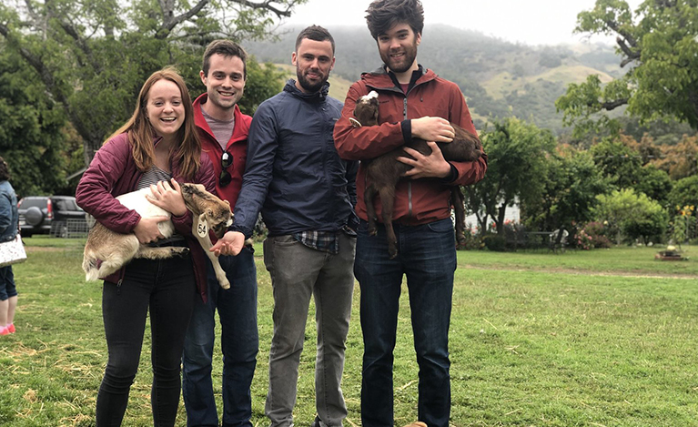
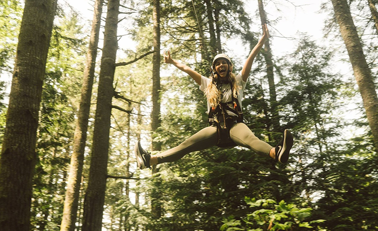

Solo travel
Pull up a hammock and enjoy the view at Five Mile Drive at Point Defiance Park in Tacoma. (Ken Lambert / The Seattle Times)
Whether it's friends, family, or social media, socializing all the time can be stressful. Sometimes you just need to get away from everyone and take some time for yourself.
Portland
Besties trip

Sean Quinton, second from right, and friends hold goats at a farm in the hills above San Simeon, California. (Courtesy of Sean Quinton)
Nothing eases the stresses of the family you were born into quite like getting together with the family you chose. A trip with your besties is a great way to detox from family frustrations and strengthen bonds with your ride-or-dies.
Friend trip
Make new friends

A camper leaps during a session at Camp Rahh, a summer camp for adults and a group of friends to provide a relaxing, fun, stress-free and unplugged experience. (Brian Oh)
Family's great, but sometimes you need to inject some new life into your relationships. A new activity can help you meet new people from different walks of life and form lasting friendships. One suggestion? Adult summer camp.
Adult summer camp